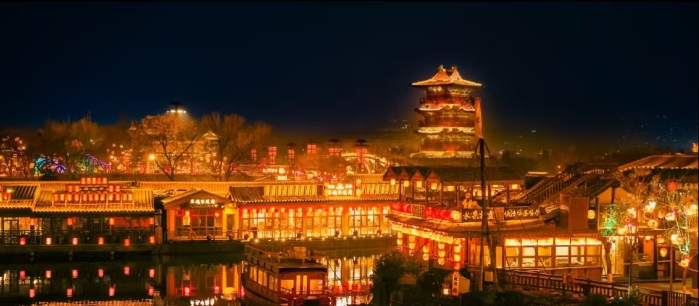
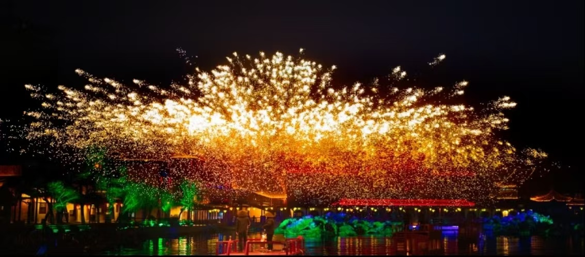

清明上河园位于河南省开封市龙亭区，是按照北宋著名画家张择端的传世名作《清明上河图》为蓝本复原建造的大型宋代历史文化主题公园，国家5A级旅游景区。
景区占地面积600余亩，园内大小宫殿数十座，店铺百余家，街巷纵横交错。这里集中再现了北宋都城汴京的繁华景象，是体验大宋文化、观赏实景演出、穿越古今的绝佳去处。

📍 地址：河南省开封市龙亭区龙亭西路5号
🎫 门票：全价票120元（线上预订约100-110元）；学生、老人等凭证享优惠政策；《大宋·东京梦华》实景演出票单独购买，价格199-1099元不等
⏰ 开放时间
日常营业时间：09:00-22:00（夏季可能延长）
特殊节假日活动丰富，开放时间以官方公告为准
🚗 交通指南
🍜 当地特色美食
一日精华路线
园区入口 → 拂云阁 → 虹桥打卡 → 九龙桥 → 阅江楼 → 观看《岳飞枪挑梁王》等实景演出 → 东京食坊用餐 → 夜游汴河，欣赏园区璀璨夜景 → 结束行程
深度体验路线
上午：游览园区核心建筑，参与汉服租赁拍照，沉浸式体验宋代生活
下午：观看多场小型演艺、民俗表演，参与互动节目
晚上：观看《大宋·东京梦华》实景演出，夜游园区，感受大宋不夜城魅力
1. 景区面积较大，全程徒步耗时耗力，建议穿着舒适便捷的运动鞋
2. 提前规划行程，可在景区官方公众号领取演出时间表，合理安排观看顺序
3. 夏季园区内树木较多但部分区域无遮挡，务必做好防晒措施，携带遮阳帽、墨镜、防晒霜
4. 景区内提供汉服租赁服务，建议体验一次，拍照效果极佳
5. 《大宋·东京梦华》演出座位分区域，建议提前预订或购买中间区域座位，视野更佳
6. 节假日游客众多，热门演出票紧张，尽早到达演出地点排队
春季（3-5月）：气候宜人，园区花木繁茂，景色优美，是踏青出游的好时节
秋季（9-11月）：秋高气爽，园区落叶纷飞，古色古香，拍照极具氛围感
冬季（12-2月）：园区推出大宋冰雪年活动，有冰雕、雪场等项目，体验独特冬日大宋风情